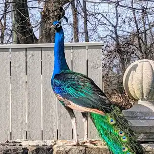
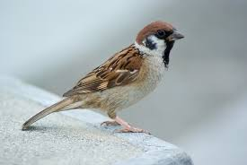
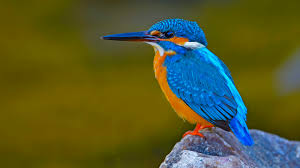
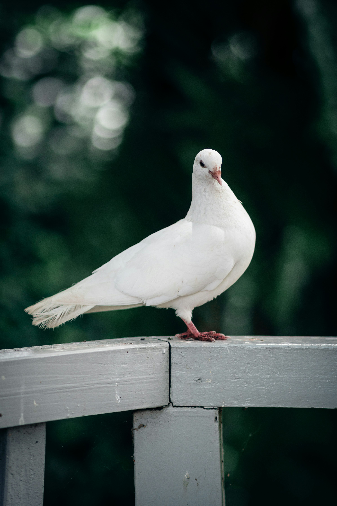

Birds are a group of warm-blooded vertebrates constituting the class Aves,
characterised by feathers, toothless beaked jaws, the laying of hard-shelled eggs,
a high metabolic rate, a four-chambered heart, and a strong yet lightweight skeleton.

The peacock is the national bird of India and national pride for all of its citizens.
Peacocks mainly thrive by eating plants and small animals and are one of the largest birds in the country.

A sparrow is a small brown or grey bird with strong and short beaks for eating seeds and sometimes cracking open the nuts.
The sparrow bird is found widely distributed across all the continents of the world.
The most common species of the sparrows is the House sparrow belonging to the Old World family of sparrows.

Kingfishers are generally brightly colored birds that often fish for their food.
There are about 90 kinds of kingfisher throughout the world.
Most of these live in warm regions near rivers or lakes.
Kingfishers have plump bodies that are about 4 to 18 inches (10 to 46 centimeters) long.

Pigeons are gentle, plump, small-billed birds with a skin saddle (cere) between the bill and forehead.
All pigeons strut about with a characteristic bobbing of the head.
Because of their long wings and powerful flight muscles, they are strong, swift fliers.